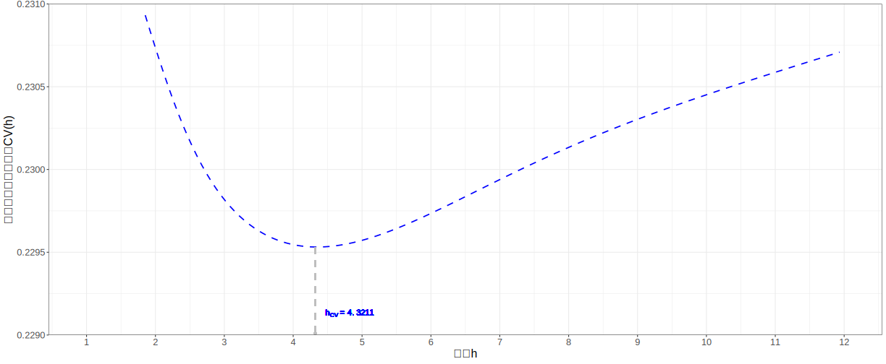
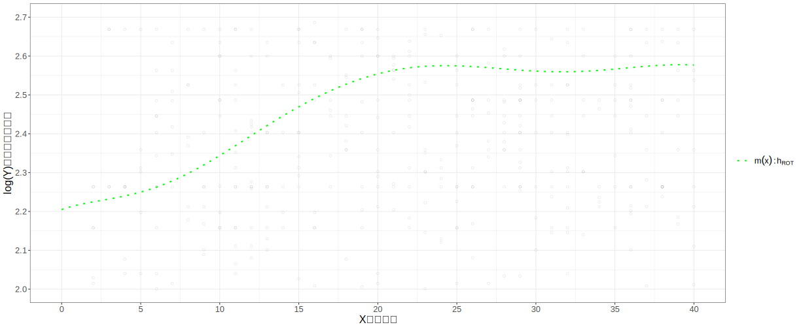
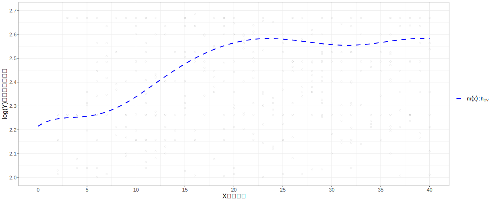
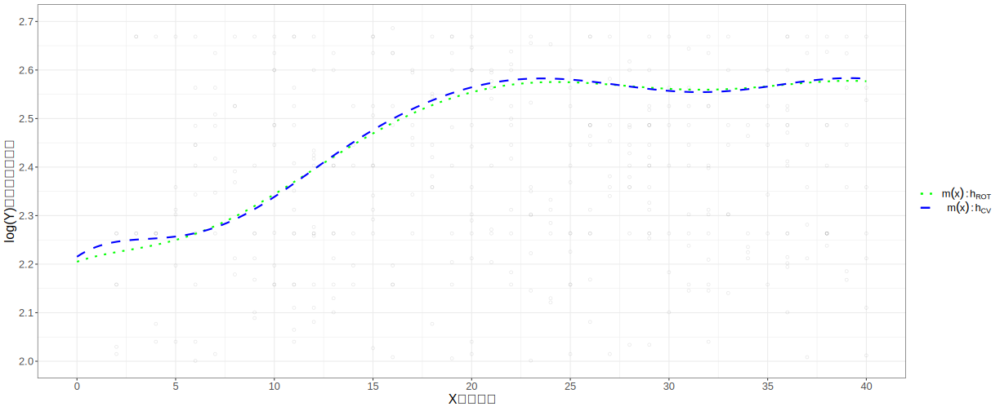
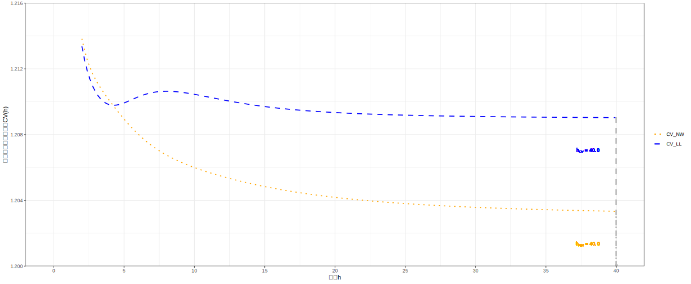
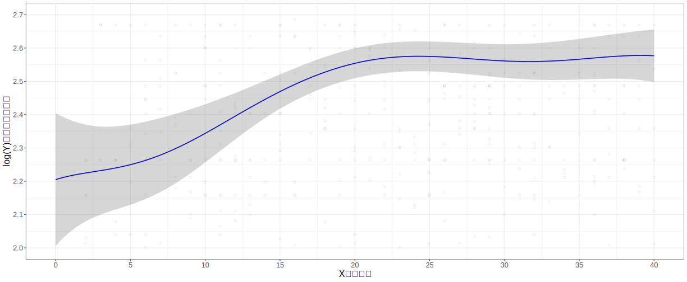

Lab 4 局部线性估计及效率分析（工资案例）
4.1 实验说明
4.1.1 实验内容
实验目标：非参数局部线性回归估计及其效率分析，复现工资案例（包括Figure 19.5和Figure 19.6的全部过程及结果（参看：HANSEN B. Econometrics[M].2021（作者手稿）. 第19章 Nonparametric Regression. ）
主要内容包括：
局部线性回归方法（LLR）下，估计CEF\(\widehat{m}(x)\)的最优谱宽\(h\)选择（经验法和交叉验证法）
局部线性回归方法（LLR）下，估计方差最优谱宽的选择
局部线性回归方法（LLR）的估计偏误、估计方差和标准差
局部线性回归估计（LLR）的显著性检验（置信区间）
4.2 案例描述
4.2.1 工资案例：背景说明
案例基于CPS数据集，重点分析其中的子样本数据（黑人、男性、拥有12年受教育程度——高中毕业），样本数为n=100。
关注的问题：时均工资的对数（
Y =log(wage)）对职业经历（X=experience）的非参数回归估计。后面的分析中，我们会重点划定观测窗口为：职业经历（年数）范围为 \([0,40]\)。因为样本中90%以上的观测对象都落在这个范围之内。
4.2.2 读取案例数据
## This file generates Figures 19.5 and 19.6
## Wage/Experience
#### attention 1/2 ####
## this is the part 1/2 R script of the whole analysis
## so you will run `hensen21-fig19-6.R` forthcoming
# Uses data file cps09mar.dta
dt_file <- here::here("data/cps09mar.dta")
dat <- haven::read_dta(dt_file)
# data set 1
# sub-sample of black men with 12 years of education
bf <- (dat[,11]==2)&(dat[,2]==1)&(dat[,4]==12)
dat1 <- dat[bf,]
## earning per hours
y <- as.matrix(log(dat1[,5]/(dat1[,6]*dat1[,7])))
x <- as.matrix(dat1[,1]-dat1[,4]-6)
n <- length(y)
dt_cps1 <- tibble(X=x, Y=y)4.2.3 数据呈现
dt_cps1 %>%
add_column(obs = 1:nrow(.), .before = "X") %>%
DT::datatable(
caption = paste0("CPS数据集(n=",n,")"),
options = list(dom = "tip", pageLength =8))%>%
formatRound(c(3), digits = 4)- 样本数据的描述性统计如下：
X.age Y.earnings
Min. :-2 Min. :-3.1
1st Qu.:15 1st Qu.: 2.2
Median :25 Median : 2.5
Mean :25 Mean : 2.5
3rd Qu.:34 3rd Qu.: 2.8
Max. :62 Max. : 4.0 4.2.4 数据散点图
#### basic plot ####
fsize <- 16
p0 <- ggplot() +
geom_point(aes(X, Y),data = dt_cps1, pch=21) +
labs(x= "X职业年数", y ="log(Y)时均工资的对数") +
scale_x_continuous(breaks = seq(0,70,10), limits = c(0,65)) +
scale_y_continuous(breaks = seq(0,4,1), limits = c(0,4)) +
theme_bw() +
theme(text = element_text(size = fsize))
图 4.1: 样本数据散点图n=r n
4.3 过程1：CEF估计的经验参考谱宽选择
4.3.1 R运算代码
我们先把经验参考谱宽的完整代码给出，后面我们再按分析流程进行步骤分解操作。
# Reference Rule
sx1 <- 0 # window range
sx2 <- 40
x1 <- matrix(1,n,1)
zz <- cbind(x1,x,x^2,x^3,x^4)
beta <- solve((t(zz)%*%zz),(t(zz)%*%y))
xtrim <- (x<=sx2)*(x>=sx1)
b <- mean(((beta[3]+x*3*beta[4]+(x^2)*6*beta[5])^2)*xtrim)
e <- y - zz%*%beta
sig <- (sum(e^2))/(n-5)
hrot <- 0.58*(((sx2-sx1)*sig/n/b)^.2)4.3.2 过程步骤解读
下面我们按前述步骤来计算参考谱宽值 \(h_{rot}\)：
步骤1：根据案例数据集，设定权重取值范围 \(\left\{\xi_{1} \leq x \leq \xi_{2}\right\}=\{0,40\}\)
步骤2：构建多项式回归
\[\begin{align} \begin{split} Y_i=&+\beta_{1}+\beta_{2}X_i+\beta_{3}X^2_i+\beta_{4}X^3_i+\beta_{5}X^4_i+u_i \end{split} \end{align}\]
直接使用OLS进行估计，得到估计方程：
mod_poly <- formula("Y~X +I(X^2) +I(X^3) +I(X^4)" )
lx_est <- xmerit::lx.est(lm.mod = mod_poly,
lm.dt = dt_cps1, lm.n = 5,
opt = c("s"),
digits = c(6,4,2,4))\[\begin{equation} \begin{alignedat}{999} &\widehat{Y}=&&+2.094395&&+0.030951X_i&&-0.000103X^2_i&&-0.000021X^3_i&&+0.000000X^4_i\\ &(s)&&(0.1371)&&(0.0284)&&(0.0019)&&(0.0000)&&(0.0000) \end{alignedat} \end{equation}\]
进而得到拟合值 \(\widehat{m}(x)\)及其二阶导 \(\widehat{m}^{\prime \prime}(x)\)及残差 \(\hat{\epsilon}\)
\[\begin{align} \widehat{m}(x) &=2.094395+0.030951x_i-0.000103x^2_i-0.000021x^3_i+0.000000x^4_i \\ \widehat{m}^{\prime \prime}(x) &=-2\times0.000103-6\times0.000021x_i+12\times0.000000x^2_i \\ \end{align}\]
- 步骤3：利用上述估计结果计算
\[\begin{align} \widehat{B}=\frac{1}{n} \sum_{i=1}^{n}\left(\frac{1}{2} \hat{m}^{\prime \prime}\left(X_{i}\right)\right)^{2} \mathbb{1}\left\{\xi_{1} \leq X_{i} \leq \xi_{2}\right\} = 0.00000025 \end{align}\]
- 步骤4：多项式模型的回归误差方差
\[\hat{\sigma}^2 = \frac{\sum{\hat{\epsilon}^2}}{n-q-1}=0.2592\]
- 步骤5：根据上述全部结果计算得到经验谱宽：
\[\begin{align} h_{\text {rot }}&=0.58\left(\frac{\widehat{\sigma}^{2}\left(\xi_{2}-\xi_{1}\right)}{n \widehat{B}}\right)^{1 / 5} = 0.58 \times \left(\frac{0.2592\times \left(40-0\right)}{762 \times 0.000000248}\right)^{1 / 5} = 5.1442 \end{align}\]
4.4 过程2：CEF估计的最优交叉验证谱宽选择
4.4.1 R运算代码
注意：此代码运行时间较长（约3-5分钟），为提高渲染效率代码文件仅需运行一次。
#### CV Bandwidth Selection ####
g <- 200
h1 <- hrot/3
h2 <- 3*hrot
hh <- seq(h1,h2,(h2-h1)/g)
hn <- length(hh)
LL <- matrix(0,n,hn)
for (i in 1:hn){
hi <- hh[i]
for (j in 1:n){
xj <- x-x[j]
k <- dnorm(xj/hi)
k[j] <- 0
z <- cbind(x1,xj)
zk <- z*(k%*%cbind(1,1))
beta <- solve(t(zk)%*%z,t(zk)%*%y)
LL[j,i] <- (y[j]-beta[1])^2
}
}
LL2 <- LL*(xtrim%*%matrix(1,1,hn))
cvLL <- colMeans(LL2)
i <- which.min(cvLL)
hLL <- hh[i]
hLL_tex <-paste0("$h_{CV}=$",number(hLL,0.0001),"")
LLmin <- min(cvLL)
# combine result as data.frame
tb_cvc <- tibble(
h_tune = hh,
cv_LL = cvLL)4.4.2 过程步骤解读
首先我们约定一下交叉验证谱宽的计算规则
步骤1：设定经验谱宽 \(h_{rot}=5.1442\)作为初始值。。
步骤2：设定调参谱宽（tuning bandwidth）。 >
一个经验谱宽范围可供参考： \([h_{rot}/3, 3h_{rot}]=[1.7147, 15.4326]\)。
给定范围内的搜寻总数为 \(n=201\)。则待评估序贯值为 \(h\in (1.7147, 1.7833, 1.8519, 1.9205, 1.9891, \cdots,15.2268, 15.2954, 15.3640, 15.4326)\)。
下面我们就可以得到交叉验证谱宽的CV计算表：
4.4.3 图形展示选择结果
#### plot 19.5-a Cross-Validation Criterion ####
lwd <- 0.8
lwadd <- 0.2
p_cvc <- ggplot(aes(x = h_tune),data = tb_cvc) +
geom_line(aes(y = cv_LL),
lty = "dashed", color = "blue",
lwd = lwd) +
labs(x= "谱宽h", y ="交叉验证准则函数值CV(h)") +
scale_x_continuous(#expand = expansion(add = c(0, .06)),
breaks = seq(1,12,1),
limits = c(1,12)) +
scale_y_continuous(
expand = expansion(add = c(0,0)),
breaks = seq(0.2290,0.2310,0.0005),
limits = c(0.2290,0.2310),
labels = scales::number_format(accuracy = 0.0001)
) +
geom_segment(aes(x=hLL, xend = hLL,
y= LLmin, yend = c(0.2290)),
arrow = arrow(length = unit(0.1,"cm"),
type = "closed"),
lty = "dashed", color= "gray", lwd=lwd) +
geom_text(aes(x = hLL+0.5, y=LLmin-0.0004),
label =latex2exp::TeX(hLL_tex),
#parse=TRUE,
color= "blue", size=4) +
theme_bw() +
theme(text = element_text(size = fsize))下面，我们可以视觉化展示交叉验证谱宽与CV变化关系：

4.5 过程3：基于不同谱宽选择的CEF估计
4.5.1 R运算代码
注意：此代码运行时间较长（约3-5分钟），为提高渲染效率代码文件仅需运行一次。
#### CEF LL Regression Estimation ####
g <- 201
xg <- seq(sx1,sx2,(sx2-sx1)/(g-1))
m1 <- matrix(0,g,1)
m2 <- matrix(0,g,1)
for (j in 1:g){
xj <- x-xg[j]
z <- cbind(x1,xj)
z1 <- z*(dnorm(xj/hrot)%*%cbind(1,1)) # use rot bandwidth
z2 <- z*(dnorm(xj/hLL)%*%cbind(1,1)) # use CV bandwidth
beta1 <- solve(t(z1)%*%z,t(z1)%*%y)
beta2 <- solve(t(z2)%*%z,t(z2)%*%y)
m1[j,1] <- beta1[1]
m2[j,1] <- beta2[1]
}
# combine result as data.frame
tb_mxh <- tibble(xg = xg,
mx1=as.vector(m1),
mx2=as.vector(m2))4.5.2 过程步骤解读
首先，我们给出两种谱宽选择（rot谱宽或者CV谱宽）下的CEF估计值（\(\widehat{m}(x)\)）的最终计算表：
4.5.3 图形展示估计结果
根据上述计算表，我们首先图形化展示在局部线性回归方法下（LLR）使用ROT谱宽估计得到的\(\widehat{m}(x)\)：
#### plot 19.5-b Local Linear Regression ####
# basic plot
p00 <- ggplot() +
geom_point(aes(X, Y),data = dt_cps1, pch=21,alpha =0.1) +
labs(x= "X职业年数", y ="log(Y)时均工资的对数") +
scale_x_continuous(breaks = seq(0,40,5), limits = c(0,40)) +
scale_y_continuous(breaks = seq(2,2.7,0.1), limits = c(2,2.7)) +
theme_bw() +
theme(text = element_text(size = fsize))
# plot mx with h_rot
p_mxh1 <- p00 +
geom_line(aes(x = xg, y = m1,
color="m1", lty="m1"),
lwd = lwd+lwadd,
data = tb_mxh) +
theme_bw() +
scale_color_manual(
name="",
breaks = c("m1"),
labels = c(expression(m(x):h[ROT])),
values=c("green"))+
scale_linetype_manual(
name="",
breaks = c("m1"),
labels = c(expression(m(x):h[ROT])),
values=c("dotted"))+
theme(legend.position = "right",
text = element_text(size = fsize))
然后，我们再图形化展示在局部线性回归方法下（LLR）使用最优CV谱宽估计得到的\(\widehat{m}(x)\)：
# plot mx with h_CV
p_mxh2 <- p00 +
geom_line(aes(x = xg, y = m2,
color="m2", lty="m2"),
lwd = lwd+lwadd,
data = tb_mxh) +
scale_color_manual(
name="",
breaks = c("m2"),
labels = c(expression(m(x):h[CV])),
values=c("blue"))+
scale_linetype_manual(
name="",
breaks = c("m2"),
labels = c(expression(m(x):h[CV])),
values=c("dashed"))+
theme(legend.position = "right",
text = element_text(size = fsize))
当然，最后我们可以对使用两种谱宽选择（rot谱宽或者CV谱宽）下的CEF估计值（\(\widehat{m}(x)\)）做图形对比：
# plot mx with both h selections
p_mxh <- p00 +
geom_line(aes(x = xg, y = m1,
color="m1", lty="m1"),
lwd = lwd+lwadd,
data = tb_mxh) +
geom_line(aes(x = xg, y = m2,
color="m2", lty="m2"),
lwd = lwd+lwadd,
data = tb_mxh) +
scale_color_manual(
name="",
breaks = c("m1", "m2"),
labels = c(expression(m(x):h[ROT]),expression(m(x):h[CV])),
values=c("green", "blue"))+
scale_linetype_manual(
name="",
breaks = c("m1", "m2"),
labels = c(expression(m(x):h[ROT]),expression(m(x):h[CV])),
values=c("dotted", "dashed"))+
theme(legend.position = "right",
text = element_text(size = fsize))
4.6 过程4：计算非参数估计的预测误差
注意：至此以下的代码块，我们需要开始执行hensen21-fig19-6.R文件里的R命令！
# don't run here !
# only show you the code file path!
source(here("Rscript/hensen21-fig19-5.R"), encoding = "UTF-8")
source(here("Rscript/hensen21-fig19-6.R"), encoding = "UTF-8")4.6.1 R运算代码
## This file generates Figures 19.5 and 19.6
## Wage/Experience
#### attention 2/2 ####
## this is the part 2/2 R script
## so you should run `hensen21-fig19-5.R` firstly
#### ROT Residual Estimation ####
h <- hrot
e2 <- matrix(0,n,1)
for (j in 1:n){
xj <- x-x[j]
k <- dnorm(xj/h)
k[j] <- 0
z <- cbind(x1,xj)
zk <- z*(k%*%cbind(1,1))
beta <- solve(t(zk)%*%z,t(zk)%*%y)
e2[j,1] <- (y[j]-beta[1])^2 # get square residual here
}4.6.2 过程步骤解读
（1）获得预测残差
我们首先可以计算得到LL估计下的预测残差的平方 \(\tilde{e}^2_i\)
这一步可以直接采用前述的参考谱宽 \(h_{rot}=5.1442\)
运行上述代码即可得到预测残差的平方\(e_i^2\)
4.7 过程5：计算条件方差估计时的参考谱宽
4.7.1 R运算代码
4.7.2 过程步骤解读
（2）再次获得参考谱宽：
后面我们还要计算方差估计下的最优谱宽。因此，这里我们需要再进行一次参考谱宽的计算流程。
构建残差平方的多项式回归模型
\[\begin{align} \begin{split} \tilde{e}^2_i=&+\gamma_{0}+\gamma_{1}X_i+\gamma_{2}X^2_i+\gamma_{3}X^3_i+\gamma_{4}X^4_i+v_i \end{split} \end{align}\]
- 利用ROT公式流程，再次获得参考谱宽
\[\begin{align} hv_{\text {rot }}&=0.58\left(\frac{\widehat{\sigma}^{2}\left(\xi_{2}-\xi_{1}\right)}{n \widehat{B}}\right)^{1 / 5} = 0.58 \times \left(\frac{1.2384\times \left(40-0\right)}{762 \times 0.000000300}\right)^{1 / 5} = 6.7708 \end{align}\]
4.8 过程6：计算条件方差估计时的最优交叉验证谱宽
4.8.1 R运算代码
注意：此代码运行时间较长（约3-5分钟），为提高渲染效率代码文件仅需运行一次。
#### Variance CV Bandwidth Selection ####
h1 <- 2
h2 <- 40
hh <- seq(h1,h2,(h2-h1)/g)
hn <- length(hh)
LLV <- matrix(0,n,hn)
NWV <- matrix(0,n,hn)
for (i in 1:hn){
hi <- hh[i]
for (j in 1:n){
xj <- x-x[j]
k <- dnorm(xj/hi)
k[j] <- 0
mu <- (t(k)%*%e2)/sum(k)
NWV[j,i] <- (e2[j]-mu)^2
z <- cbind(x1,xj)
zk <- z*(k%*%cbind(1,1))
beta <- solve(t(zk)%*%z,t(zk)%*%e2)
LLV[j,i] <- (e2[j]-beta[1])^2
}
}
cvNWV <- colMeans(NWV*(xtrim%*%matrix(1,1,hn)))
cvLLV <- colMeans(LLV*(xtrim%*%matrix(1,1,hn)))
i1 <- which.min(cvNWV)
i2 <- which.min(cvLLV)
hNWV <- hh[i1]
hLLV <- hh[i2]
hNWV_tex <-paste0("$h_{NW}=$",number(hNWV,0.1),"")
hLLV_tex <-paste0("$h_{CV}=$",number(hLLV,0.1),"")
NWminV <- min(cvNWV)
LLminV <- min(cvLLV)
# combine all result
tbl_cvcv <- tibble(
h_tune = hh,
cv_NW = cvNWV,
cv_LL = cvLLV)4.8.2 过程步骤解读
（3）再次获得最优交叉验证谱宽：然后开始计算方差估计下的最优谱宽。这里我们再进行一次交叉验证谱宽的计算流程。
步骤1：设定经验谱宽 \(hv_{rot}=6.7708\)作为初始值。。
步骤2：设定调参谱宽（tuning bandwidth）。 >
一个经验谱宽范围可供参考： \([2.0, 40.0]\)。
给定范围内的搜寻总数为 \(n=202\)。则待评估序贯值为 \(h\in (2.0000, 2.1891, 2.3781, 2.5672, 2.7562, \cdots,39.4328, 39.6219, 39.8109, 40.0000)\)。
步骤3：采用交叉验证留一法，分别遍历计算NW估计和LL估计下的全部CV值（见后面计算表）
步骤4：最小CV值对应的谱宽评估值，则为最优交叉验证谱宽。当然，我们最终发现NW估计和LL估计下的结果是一样的，都选择了最大边界值 \(hv_{CV}(NW)=hv_{CV}(LL)=40\)。（见后面的CV比较图）
最后我们就可以得到，NW和LL方法下的CV值计算表（附表）：
4.8.3 图形展示谱宽选择结果
基于上述计算，我们最终得到NW和LL方法下方差估计的CV值与谱宽关系（制图代码及附图）：
#### plot 19.6-a Cross-Validation Criterion ####
## Cross-Validation for Conditional Variance
p_cvcv <- ggplot(aes(x = h_tune),data = tbl_cvcv) +
geom_line(aes(y = cv_NW, lty = "CV_NW", color = "CV_NW"),
lwd = lwd) +
geom_line(aes(y = cv_LL, lty = "CV_LL", color = "CV_LL"),
lwd = lwd) +
labs(x= "谱宽h", y ="交叉验证准则函数值CV(h)") +
scale_x_continuous(#expand = expansion(add = c(0, .06)),
breaks = seq(0,40,5),
limits = c(0,40)) +
scale_y_continuous(expand = expansion(add = c(0,0)),
breaks = seq(1.200, 1.216,0.004),
limits = c(1.200, 1.216),
labels = scales::number_format(accuracy = 0.001)
) +
theme_bw() +
geom_segment(aes(x=hNWV, xend = hNWV,
y= NWminV, yend = 1.2),
arrow = arrow(length = unit(0.1,"cm"),
type = "closed"),
lty = "dotted", color= "gray", lwd=lwd) +
geom_text(aes(x = hNWV-2, y=NWminV-0.002),
label =latex2exp::TeX(hNWV_tex),
color= "orange", size=3) +
geom_segment(aes(x=hLLV, xend = hLLV,
y= LLminV, yend = 1.2),
arrow = arrow(length = unit(0.1,"cm"),
type = "closed"),
lty = "dashed", color= "gray", lwd=lwd) +
geom_text(aes(x = hLLV-2, y=LLminV-0.002),
label =latex2exp::TeX(hLLV_tex),
color= "blue", size=3) +
scale_color_manual(
name="",
breaks = c("CV_NW", "CV_LL"),
values=c("orange", "blue"))+
scale_linetype_manual(
name="",
breaks = c("CV_NW", "CV_LL"),
values=c("dotted", "dashed"))+
theme(legend.position = "right")
LL估计的CV值在局部上具有最小值，也即局部最优谱宽约为 \(hv_{cv}(LL)\simeq 5\)
但是从全局来看，无论是NW估计，还是LL估计，CV函数值都表现为下降趋势。因此它们都选择了最大边界值 \(hv_{CV}(NW)=hv_{CV}(LL)=40\)。
4.9 过程7：计算CEF估计的方差和标准差
4.9.1 R运算代码
#### Variance Estimation ####
se <- matrix(0,g,1)
u <- cbind(e2,e2)
for (j in 1:g){
xj <- x-xg[j]
z <- cbind(x1,xj)
K <- dnorm(xj/hrot)
z1 <- z*cbind(K,K)
ZKZ <- solve(t(z1)%*%z)
ZK2 <- t(z1)%*%(z1*u)
V1 <- ZKZ%*%ZK2%*%ZKZ
se[j,1] = sqrt(V1[1,1])
}
L1 <- m1-1.96*se
U1 <- m1+1.96*se
# combine all result as data.frame
tbl_band <- tibble(
xg =xg,
mx = m1,
s=as.vector(se),
s2=se^2,
lwr = L1,
upr = U1
)4.9.2 过程步骤解读
（4）计算方差、标准差。利用前面的平方预测误差，并使用谱宽 \(h=5.1442\)进行LL估计，最终得到方差和标准差估计值（见后面附表）。
\[\begin{align} \widehat{\boldsymbol{V}}_{\widehat{\beta}}(x)=\left(\boldsymbol{Z}^{\prime} \boldsymbol{K} \boldsymbol{Z}\right)^{-1}\left(\sum_{i=1}^{n} K\left(\frac{X_{i}-x}{h}\right)^{2} Z_{i}(x) Z_{i}(x)^{\prime} \widetilde{\boldsymbol{e}}_{i}^{2}\right)\left(\boldsymbol{Z}^{\prime} \boldsymbol{K} \boldsymbol{Z}\right)^{-1} \end{align}\]
同时，我们将计算得到CEF估计值\(\widehat{m}(x)\)的估计方差和估计标准误（见如下计算附表）：
tbl_band %>%
add_column(id = 1:nrow(.), .before = "xg") %>%
DT::datatable(caption = "LL方法下的方差和标准差、置信区间",
options = list(dom ="tip", pageLength =8)) %>%
formatRound(c(3:7), digits = 4)（5）计算置信区间和置信带。进一步计算逐点置信区间（Pointwise Confidence Interval）（见前面附表），并得到置信带（见后面附图）。
\[\begin{align} \widehat{m}(x) \pm z_{1-\alpha/2}(n-1) \cdot \sqrt{\widehat{V}_{\widehat{m}(x)}}\\ \widehat{m}(x) \pm 1.96 \sqrt{\widehat{V}_{\widehat{m}(x)}} \end{align}\]
4.9.3 图形展示置信带
利用前述数据和置信区间机选公式，最总我们可以得到LLR方法下CEF估计量\(\widehat{m}(x)\)的估计置信区间和置信带（附图）
#### Plot 19.6-b Confidence Bands ####
p_band <- p00 +
geom_line(aes(x = xg, y = mx),
data = tbl_band,
color = "blue", lty = "solid", lwd = lwd) +
geom_ribbon(aes(x=xg,ymin = lwr, ymax = upr),
data = tbl_band,
alpha = 0.2)